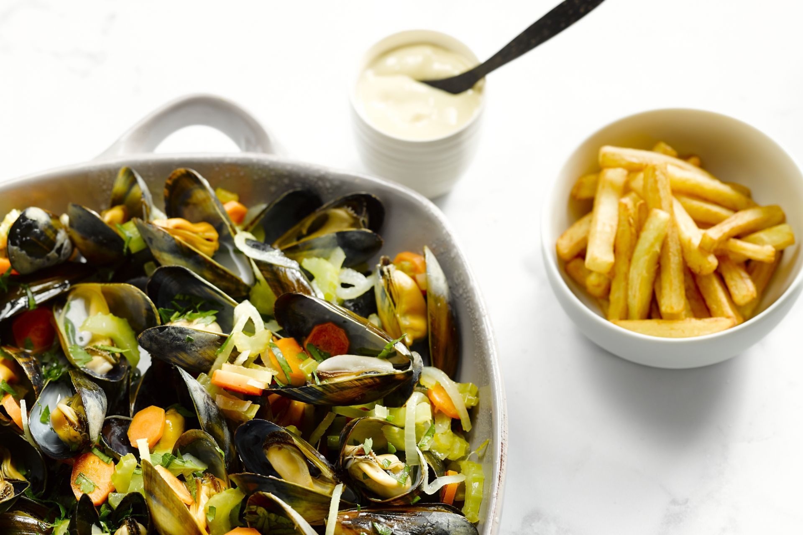

Mussels with fries

Description
Although mussels with fries are popular in many countries, it is thought that the dish originated in Belgium.
It is likely that it was originally created by combining mussels, a popular and cheap foodstuff eaten around the
Flemish coast, and fried potatoes which were commonly eaten around the country in winter when no fish or other
food was available.
On average, between 25 and 30 tonnes of mussels are consumed each year in Belgium as moules-frites.
Much of the mussels consumed in Belgium come from mussel farms in nearby Zeeland in the Netherlands.
You can make this dish in a variety of ways with wine, beer, cream or just natural with water added.
It is also usually served with "mosselsaus" which is a mix of mayonaise, mustard and cooking liquid from the
mussels
Ingredients
- 1 kg mussels per person
- 2 sticks of celery
- 2 onions
- 1 carrot
- half a bundle of parsley
- 400 ml white wine
- oil or butter
- salt, pepper and herbs to taste
- 500 gr potatoes
Steps
- Rinse the mussels with clean water and remove the bad ones.
Cut up the onions and stew them in butter or oil until soft. Add the carrots and celery and let it stew for
a couple of minutes.
Finely chop up the parsley and set it aside.
- Add the mussels and the white wine and let it stew with a lid until the mussels open up.
You can shake the pot with a lid a couple of times to mix all the flavours.
When the mussels are ready you can add the parsley
- Cut up the potatoes in fries and rinse them thoroughly with water. Dry your fries in a towel and deep fry
them the first time at a temp of 140°C.
Let them cool down for a couple of minutes.
- Deep fry the fries again but this time at 180°C until crispy and golden brown.
- Serve the mussels with the fries and a side of "mosselsaus".